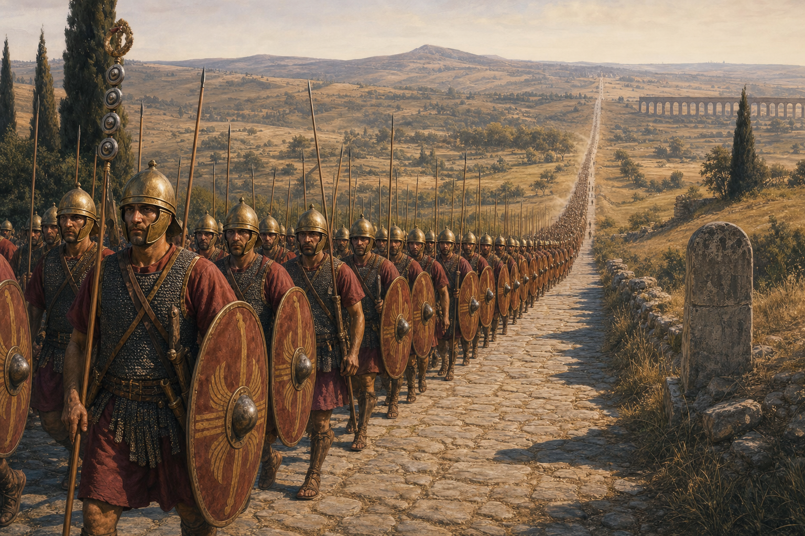
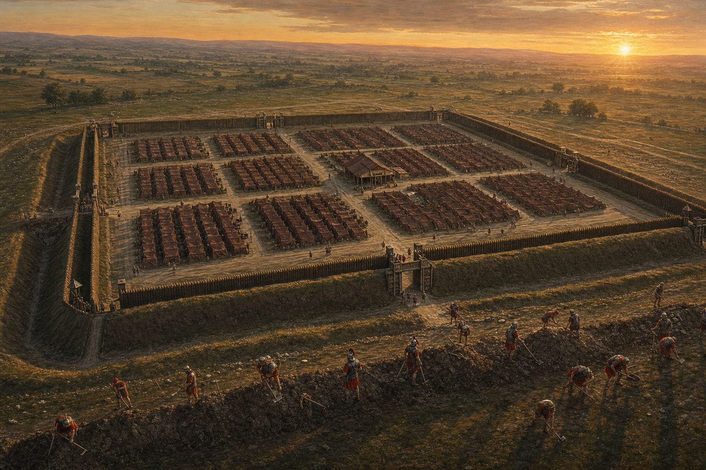
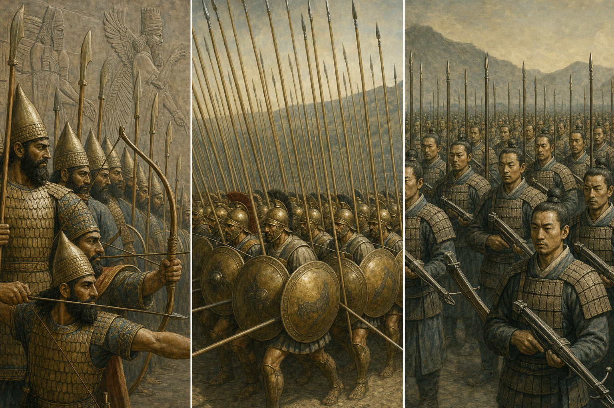
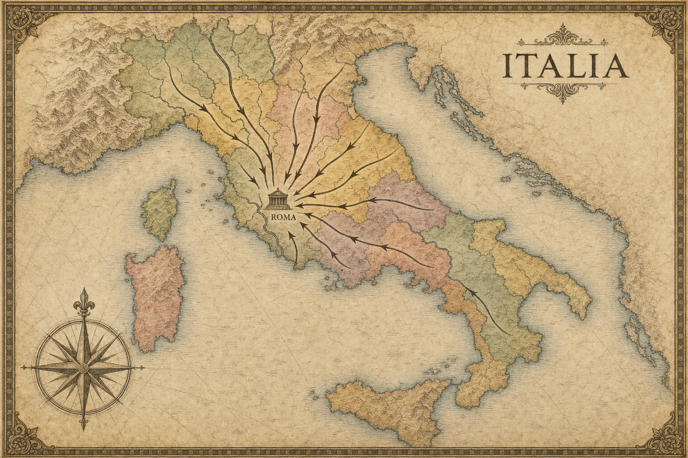
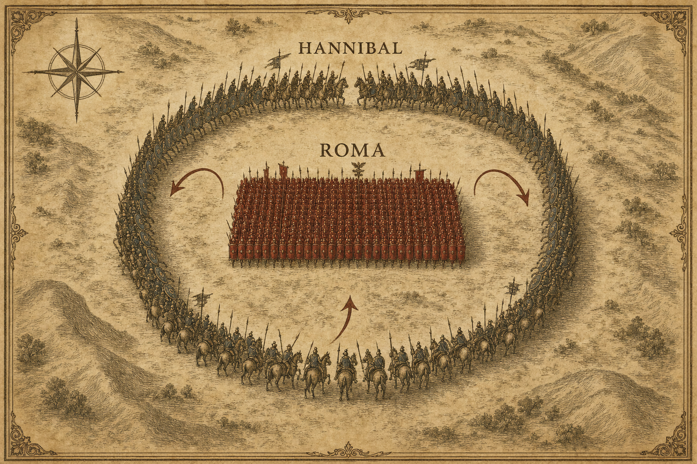
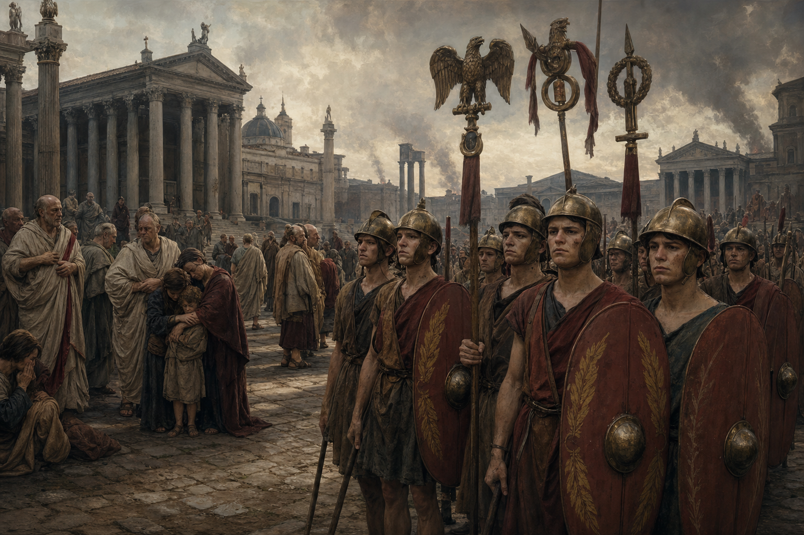
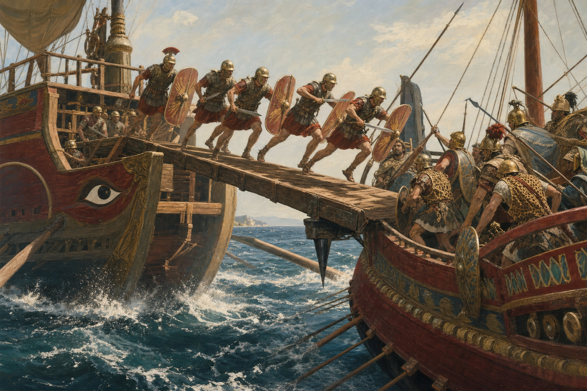
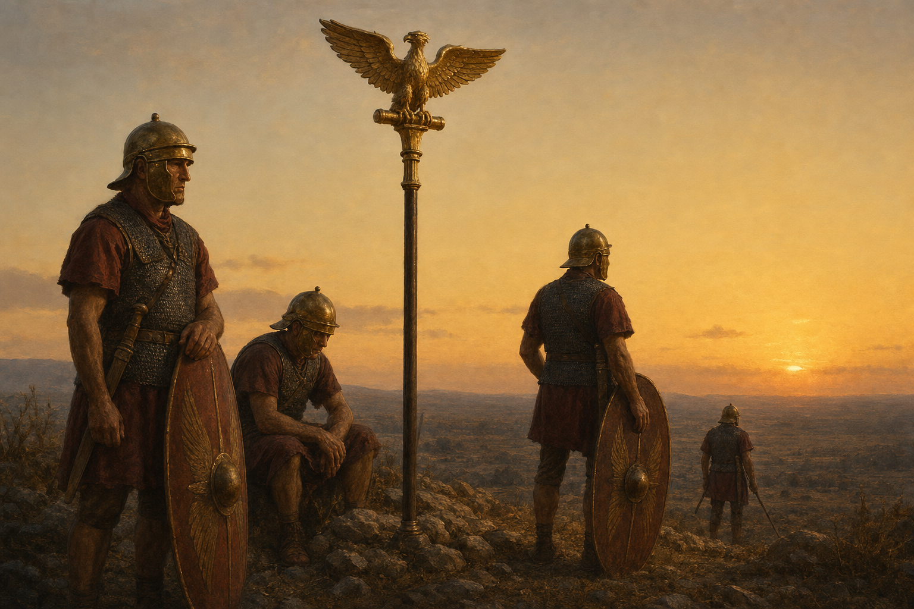

Why Rome Kept Winning
The Real Reason One City Conquered the Ancient World — and Why It Isn't What You'd Think
The Roman Republic · 300–200 BC

The Real Reason One City Conquered the Ancient World — and Why It Isn't What You'd Think
The Roman Republic · 300–200 BC

For about seven hundred years, one city on a river in Italy beat almost everyone it fought. It began as a small town of farmers and ended up ruling a world that stretched from the cold of Britain to the deserts of Egypt — the largest empire the ancient West had ever seen.
How did Rome do it? Ask most people and you will get a quick, confident answer: the Romans won because they were so organized. So disciplined. So orderly — unlike the quarrelsome, disorganized peoples all around them.
That answer is not wrong. But it is only half right — and the missing half is the interesting part. Because when you look closely at how Rome actually won its wars, being organized turns out not to be the secret. Plenty of armies were organized. Rome had something deeper, and stranger, and far harder to copy.
This is the story of what that something was.

The case for the usual answer really is strong, so let us give it its due.
A Roman army was unlike most armies of the ancient world. It was not a crowd of warriors who turned up for one summer and went home at harvest. In Rome's great age of conquest it was becoming a professional institution: men served for years, trained constantly, and obeyed a written code of discipline. Every soldier carried the same standardized equipment. There were ranks, and rules, and specialists — engineers, surveyors, doctors, men whose whole job was to build bridges and siege engines.
The clearest proof of Roman discipline is something they did every single night. At the end of a long day's march, deep in enemy land, a Roman army did not simply sleep where it stopped. It built a fort — the same fort, every time. A great square, ringed by a ditch and a wall of earth, with straight streets laid out on a grid and every unit's tents always in exactly the same place. A soldier dropped into any Roman camp anywhere in the world would know precisely where to go. They could throw the whole thing up in a few hours, tear it down at dawn, march all day, and build it again that night.
A Roman marching camp followed the same plan everywhere — the historian Polybius said it looked "like a town." A 200-foot empty strip ran between the tents and the outer wall, so enemy arrows and fire shot over the rampart fell harmlessly short.
This was real, and it mattered. An army this organized could go anywhere, recover from a bad day, and was almost never caught unprepared. If you wanted to argue that Rome conquered the world through sheer order, the nightly camp is your best evidence.
But here is the problem.

If organization and discipline were enough to conquer the world, then Rome should not have been the only empire that managed it. But discipline was not a Roman invention, and it was not a Roman secret.
Centuries before Rome was anything more than a village, the kings of Assyria fielded a professional army whose soldiers trained all year round and were paid a wage — not farmers called up for the season, but full-time troops, organized into squads of ten under their officers, famous for the cold precision of their movements.
In Greece, King Philip of Macedon turned soldiering into a full-time profession and drilled his men into the phalanx — a bristling wall of long pikes that moved as one body. His son Alexander used that disciplined machine to conquer the whole Persian Empire, the largest the world had yet seen.
And far to the east, the armies of Qin China conscripted and drilled enormous, standardized forces that obeyed commands with the same trained precision — and used them to unite all of China under a single emperor.
So discipline was present wherever great conquerors were. It was necessary — you cannot build an empire without it — but it was not what made Rome special. Many well-drilled armies won wars. Which makes the question sharper than we thought: what did Rome have that the others did not?
If discipline alone conquered the world, the Assyrians, the Macedonians, and the armies of Qin all had a claim to it. Order was necessary. It was not the answer.

Here is the first thing Rome had that almost no one else did.
When Rome defeated an enemy in Italy, it usually did not wipe them out or simply tax them. It did something cleverer: it turned them into allies — the socii. And the deal was unusual. The allies did not mainly owe Rome money. They owed Rome soldiers. Each allied people was bound by treaty to send a set number of fully-equipped fighting men whenever Rome called.
Think about what that means. Every time Rome won a war, its supply of future soldiers grew larger. The more enemies Rome beat, the more men it could put in the field the next time. Most ancient states had a fixed pool of fighters — lose too many and you were finished. Rome's pool deepened with every victory. In a normal Roman army, about half the soldiers — and most of the cavalry — were allies, not Romans at all.
An ancient count recorded by the historian Polybius put the fighting-age men of Rome and its Italian allies at over 700,000. No army that size ever took the field — it was a well to draw from, not a force to gather — but it shows a depth of manpower no rival could match.
This is what made Rome so dangerous. To beat Rome for good, you could not just win a battle. You had to drain a well that kept refilling itself. One man would try — the greatest general of the age — and that is the next part of the story.

In 218 BC a Carthaginian general named Hannibal did the impossible: he marched an army — with war elephants — over the snow of the Alps and down into Italy itself. And he began to win. Battle after battle, he beat the Romans on their own ground.
Then, on the 2nd of August, 216 BC, near a village called Cannae, came the worst day in the history of Rome.
The Romans assembled the largest army they had ever raised — around eighty thousand men — to crush Hannibal once and for all. Hannibal had perhaps half that number. He should have been doomed.
Instead he set a trap that generals still study today. He let the center of his line bulge forward toward the Romans — then deliberately gave way, folding slowly backward as the huge Roman mass pushed in, packing itself tighter and tighter. His best troops waited on the wings; as the Romans crowded forward, the wings swung shut on both sides while his cavalry sealed the rear. The greatest army Rome had ever fielded was surrounded, crushed together so tightly that men could barely raise their swords, and destroyed from the outside in.
By nightfall, ancient writers tell us, somewhere between forty-eight and seventy thousand Romans lay dead — among them one of Rome's two ruling consuls and dozens of its senators. In a single afternoon, Rome lost close to a fifth of all its fighting-age men.
Cannae is still taught in military academies as the perfect "battle of annihilation." Commanders have tried to repeat Hannibal's trap for more than two thousand years.
For any other state in the ancient world, this would have been the end.

After Cannae, Hannibal waited for Rome to do what every beaten power did: surrender, or beg for terms.
Rome did neither.
The Senate refused even to ransom the prisoners Hannibal had taken. It refused to discuss peace. Instead Rome did the one thing that could defeat a genius like Hannibal: it kept going. Within weeks it was raising fresh legions — arming younger men, volunteers, and at the lowest point even freed slaves. It stopped offering Hannibal the big battles he kept winning, and instead shadowed him, wore him down, year after year.
And here is the deepest fact of all. After a defeat that should have shattered the alliance, more than four-fifths of Rome's allies stayed loyal. Some did go over to Hannibal — much of southern Italy turned against Rome, and the rich city of Capua opened its gates to him — but the great body of the alliance held. The well still had water in it.
So the war dragged on, and slowly the truth came clear: Hannibal could win every battle and still lose the war. He was deep in enemy country with an army he could not easily replace. Rome could lose army after army and simply build another. Fourteen years after Cannae, a Roman general named Scipio carried the war to Carthage's own homeland and beat Hannibal at last. Rome had lost the battles. It won the war.
Hannibal won nearly every battle he fought in Italy. He lost the war anyway — because he could not win it fast enough to beat an enemy that refused to run out of soldiers, or to quit.

There was one more thing Rome did better than almost anyone: it copied.
The Romans were not too proud to admit when an enemy had something better. When they met Spanish warriors carrying a short, brutally effective stabbing sword, Rome adopted it outright — the famous gladius, the signature weapon of the legions, was a Spanish design.
When Rome fought Carthage the first time, it faced a bigger problem: Carthage ruled the sea, and Rome had almost no navy at all. So the Romans found a wrecked Carthaginian warship that had run aground, took it apart to learn how it was built, and used it as a blueprint to build a whole fleet of their own — more than a hundred warships, from scratch, in a matter of weeks. Their copies were clumsy and slow. So Rome changed the rules of the game. It bolted a long spiked bridge — the corvus, the "raven" — to the bow of each ship. When an enemy galley came close, the bridge dropped, its spike bit into the enemy deck, and Roman legionaries charged across to fight the kind of land battle they always won. Rome turned a sea war it should have lost into an infantry fight it knew how to win.
Even the famous flexible legion was a borrowed lesson. Generations earlier Rome had been badly beaten by the Samnites in the rough hill country of central Italy, where its rigid battle-line was useless. So Rome rebuilt its army into small, independent units that could move and fight on any ground — a design learned from the very enemy that had humiliated it.
A later writer admired this Roman habit most of all — they were quick to take a good idea from anyone, friend or enemy, and make it their own. Rome's genius was being a student of its own mistakes.

So why did Rome keep winning?
Not because it was organized. Many armies were organized. Discipline was the floor Rome stood on — not the thing that made it tall.
Rome won because it had built a system, and the system had four parts that only worked together:
A professional army that could march anywhere and was almost never caught unready.
An alliance that turned every defeated enemy into a new source of soldiers — a well that refilled with each victory.
The refusal to quit after even the worst defeat, and the depth to raise a new army when the last one was gone.
The humility to copy any good idea, from anyone, and make it Rome's own.
Take away any single one and Rome loses. A disciplined army with no reserves is destroyed at Cannae and the war is over. Huge reserves without discipline are just a mob. Both of those, without the will to keep going, surrender after one terrible day. And all three, without the willingness to learn, are beaten by the first enemy with a better sword or a better fleet.
This is the real lesson — and it is a better one than "be organized and you will win." Order matters. But order alone is not enough. What actually conquers the world is a system that can survive disaster, keep refilling its strength, and learn from everyone it meets. That is far harder to build than discipline. And it is far harder to beat.
Hannibal beat the Roman army again and again. He could not beat the Roman system. That is the difference between winning a battle and winning a war.
Five questions about what you just read.
Rome lost battles for seven hundred years. It kept winning wars — because order was only where it began.
Based on the histories of Polybius and Livy,
and on Adrian Goldsworthy's The Complete Roman Army